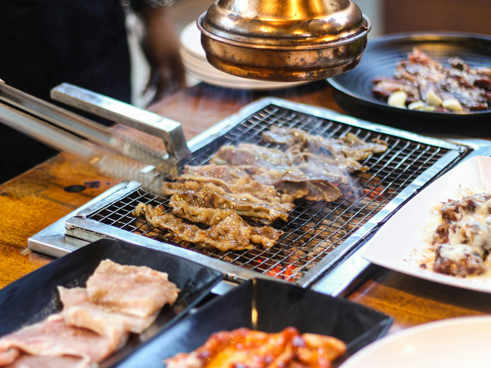
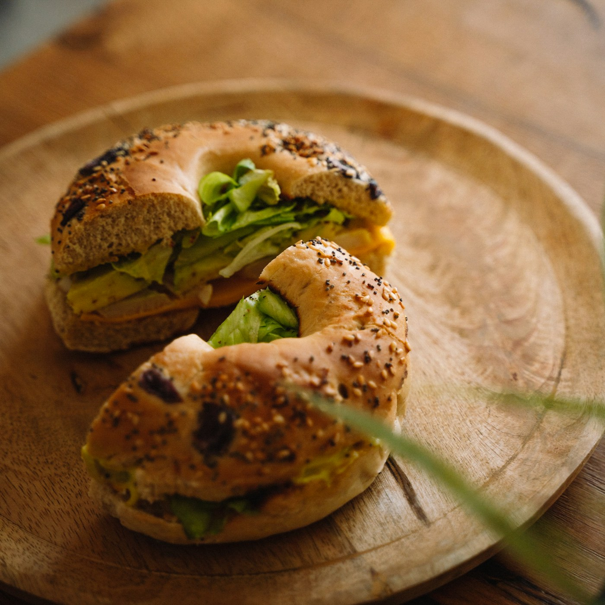
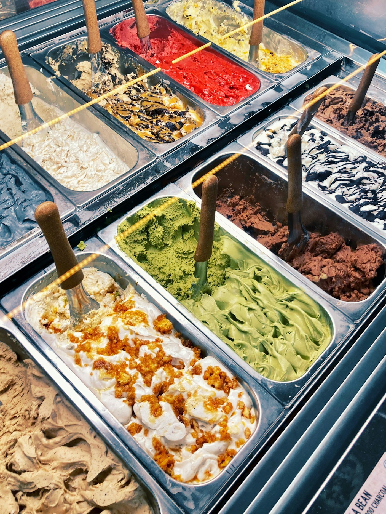

Isaac Toast 與 EGGDROP 二選一即可，都是弘大彈性選項。
17收藏地點
12弘大／延南／望遠
2安國／北村
3聖水
Opening Spread · Tastes
這趟旅行，先從想吃的開始
安國的早午餐、聖水的甜點、冬夜的韓式烤肉——照片是氣氛參考，不代表收藏店家的實際餐點。



Chapter 01 · Decisions
排程前先知道
這五組是手冊裡最需要取捨的地方。先決定主目標，其餘就能當備案，不會為了全部吃到而讓行程變成趕場。
London Bagel 與 Artist Bakery 可一間內用、一間外帶，不必各占一餐。
Neungdong Minari 偏熱湯午餐；Kkubdang 偏烤肉晚餐。
No More Pizza、Puradak 都可保留為當晚看胃口的備案。
Stay Passport 重房間體驗；Amanti 重視前台與標準飯店服務。
Chapter 02 · Four-day Canvas
四日行程工作頁
這是按區域密度做的暫定框架，不是定案。抵離時間與住宿確認後，再把餐廳和景點放進正確時段。
12.12 SAT · DAY 01
抵達／弘大
等待航班資料- 入住或先寄放行李
- 第一餐優先選車站附近
- 延南洞散步或弘大晚餐
- 宵夜保留彈性
12.13 SUN · DAY 02
安國／北村
區域框架- London Bagel 或 Artist Bakery
- 搭配北村、宮殿區景點
- 避免排隊店卡住預約景點
- 晚餐回弘大或另選區域
12.14 MON · DAY 03
聖水
需查週一公休- 午餐：Neungdong Minari
- 逛街途中：Maman Gelato
- 晚餐：Kkubdang
- 出發前複查三店週一營業
12.15 TUE · DAY 04
望遠／離境
等待航班資料- 依退房與航班時間調整
- 時間充裕才排望遠市場
- Hoonhoon 糖餅當點心
- 預留回飯店取行李時間
Chapter 03 · Neighborhoods
三個區域，三種旅行節奏
收藏高度集中，最省力的方式不是逐店跑，而是把一天交給一個區域，再用主餐、點心、備案組合。
弘大／延南／望遠
住宿與晚餐主場。弘大入口站周邊適合抵離日，延南洞適合散步與晚餐，望遠市場則需要獨立留出半日餘裕。
安國／北村
兩家都是熱門麵包店，重點是和歷史街區一起走，不要讓排隊吞掉整個上午。
聖水
最完整的一日餐飲鏈：熱湯午餐、Gelato 休息、烤肉晚餐，步行與地鐵出口都集中。
Chapter 04 · Stay
住宿候選比較
兩間都在弘大，但取向完全不同。住宿一旦確定，四天的出發點、寄放行李與離境日動線就能一起定下來。
| 住宿 | 類型 | 車站距離 | 主要優點 | 預訂前確認 |
|---|---|---|---|---|
| Stay Passport 札幌旅館風弘大 |
特色民宿／兩人房 | 弘大入口 9 號出口約 517 m | SPA、樓中樓、房間體驗鮮明 | 電梯、寄放行李、入住方式、取消政策 |
| Amanti Hotel Seoul | 四星級飯店 | 弘大入口 1 號出口約 485 m | 前台、行李寄放與標準飯店服務較穩定 | 旅行日房價、房型、早餐與免費取消 |
確認抵達與離境航班
選定住宿與取消條件
決定需要預約的晚餐
出發前複查週一公休
下載 NAVER Maps 離線備查
Chapter 05 · Place Guide
美食與住宿圖鑑
資訊提醒：評分、評論數與營業時間是 2026-08-28 的 NAVER 快照；出發前 7～14 天仍應複查公休日、最後點餐與預約規則。餐廳卡中的三張照片是該類料理的參考圖，不是收藏店家的實拍菜色。
照片來源與攝影者
- 雪中昌德宮：sunok hong / Unsplash
- 弘大街巷：Cecelia Chang / Unsplash
- 北村韓屋：Winged Jedi / Unsplash
- 聖水大橋：Thinktip / Unsplash
- 韓式烤肉：Subagus Indra / Unsplash
- 貝果三明治：Erwan NONON / Unsplash
- Gelato：selaa_id / Unsplash
45 張料理參考圖：作者、原始檔與授權
圖片取自 Wikimedia Commons，已做尺寸縮放與 JPEG 壓縮；點餐廳卡上的照片也能直接開啟原始檔頁。